一组可直接部署到 Halo、1Panel、Nginx 静态目录的小项目 —— 十个纯静态、一个全栈，绝大多数无后端、无 API Key、单文件或轻量目录即可运行。
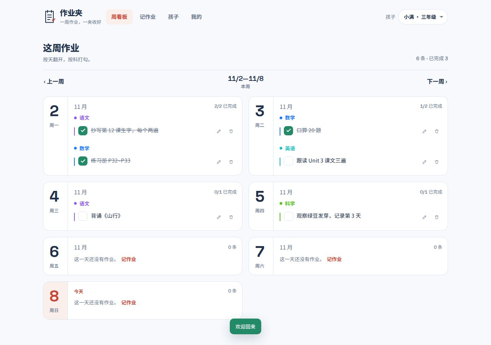
面向家长的多孩子作业记录：拍照识别或逐行批量录入，按「每周 → 每天 → 学科」一屏看清，勾选完成即划线计数；单账号最多 10 个孩子档案、数据按账号隔离，JWT 双 Token 鉴权。Vue 3 + Express 5 + node:sqlite，注册即用，照片按账号分目录存放。
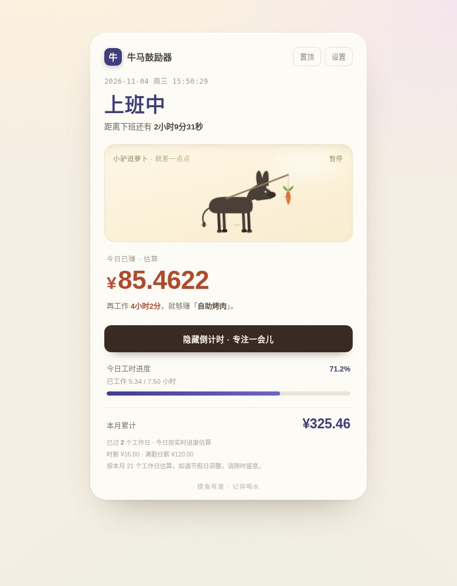
把「今天也在好好搬砖」算成实时收入：按上班 / 午休 / 下班自动算工时与今日进账，上班时数字精确到小数点后四位持续跳动；小驴在卡片里追着胡萝卜原地踏步，永远只差一点点。可在设置里写愿望清单，换算「再干多久就够买」；一键进入 25 分钟专注模式，金额虚化、小驴降饱和。单文件、零依赖、localStorage 存档。
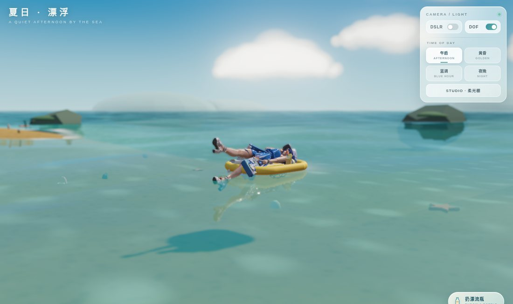
海边夏日场景：蓝发女孩躺在柠檬色气垫上随浪漂浮、喝冰柠檬茶，拖拽环视、滚轮双指缩放、WASD 平移；午后 / 黄昏 / 蓝调 / 夜晚 / 柔光棚五套光照带 SSAO、景深、Bloom 与暗角。扔出漂流瓶后她会察觉、翻身下水游过去捡信、上岸逐字读给你听。Three.js 单文件，骨骼动画混合，模型内嵌不依赖外部 glb。
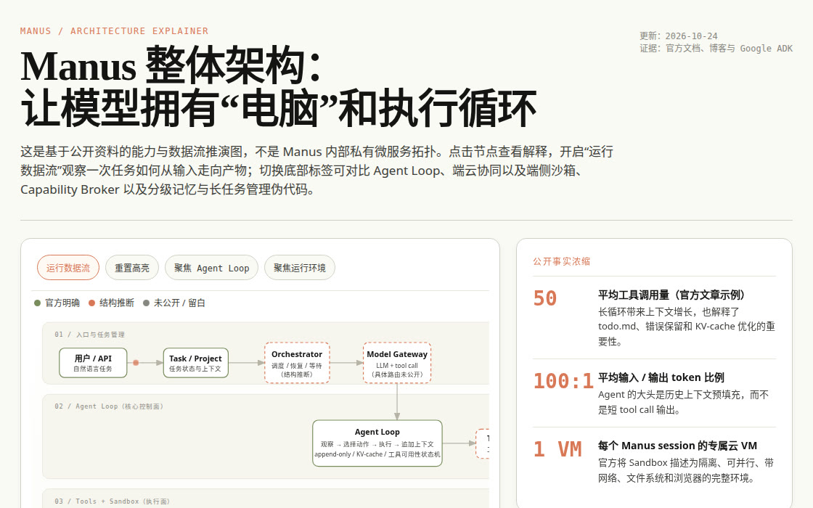
单文件交互式架构图解：从入口、Agent Loop、工具到 Sandbox 的完整数据流可点击展开，逐项对比 Manus Agent Loop 与标准 ReAct，并给出端云协同、Capability Broker 与分级记忆的推演伪代码。明确区分官方能力、结构推断与未公开实现，零依赖、可离线阅读。
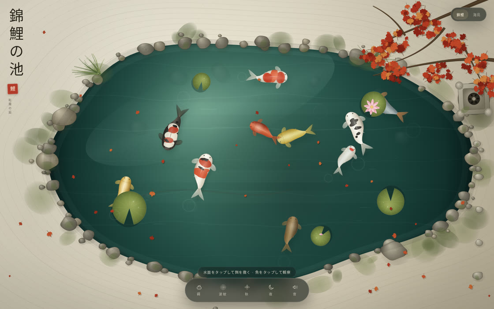
双场景静态作品：日式锦鲤池可撒饵聚鱼、点鱼查品种、划水起涟漪，春樱夏荷秋枫冬雪四景轮换，另有昼夜与虫鸣水声；右上角一键切到热带海岛浅滩，可投鱼入海、撒饵、拖动缩放探索。锦鲤池为 Canvas 2D，海岛为 Three.js WebGL，均单文件零依赖。
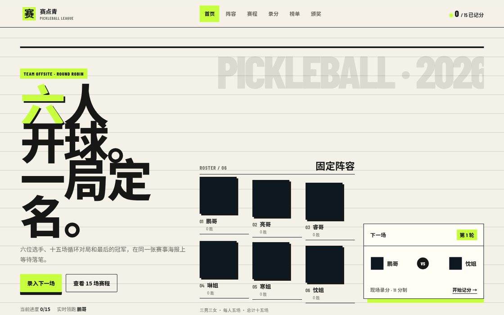
六人团建匹克球单打循环赛记录器：自动生成 15 场赛程、录入比分实时更新排名、全部完成后生成冠军海报。固定 3 男 3 女阵容，11 分制需领先 2 分。
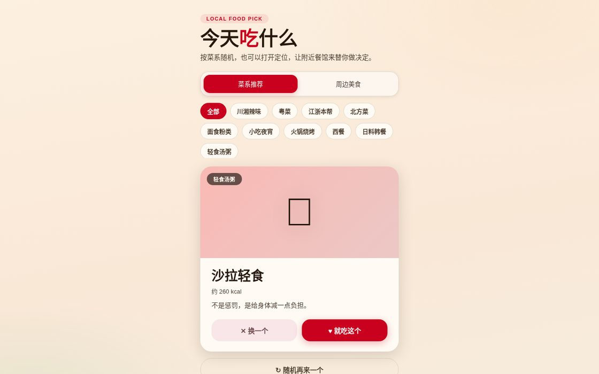
按菜系随机推荐菜品，支持收藏与浏览器定位；调用免费 OpenStreetMap / Overpass API 查询周边美食。适合微信内分享，无需后端与 API Key。
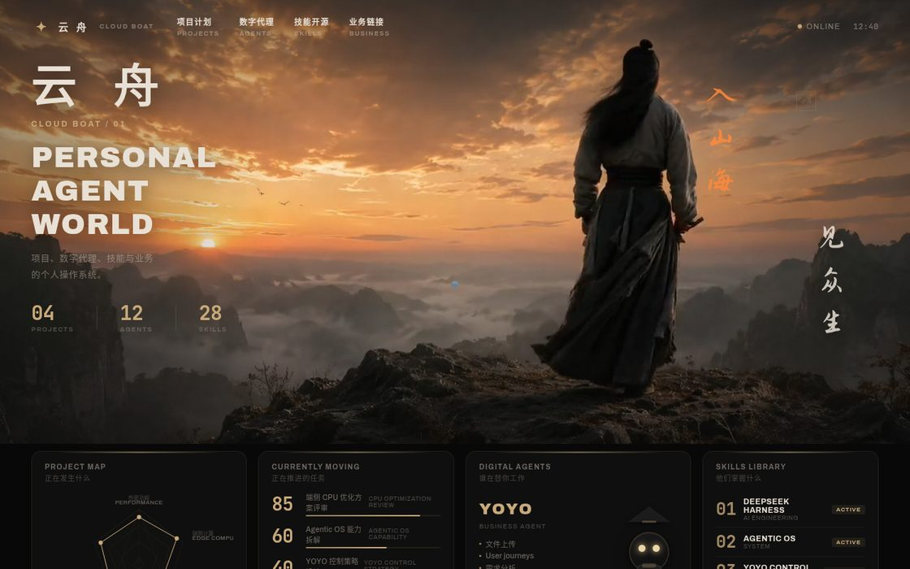
鼠标 / 触摸驱动视频时间轴交互主页，人物随指针转身；晚霞暖色调玻璃拟态 UI。附《视频加载教程》动态视频背景方案与图文讲解。
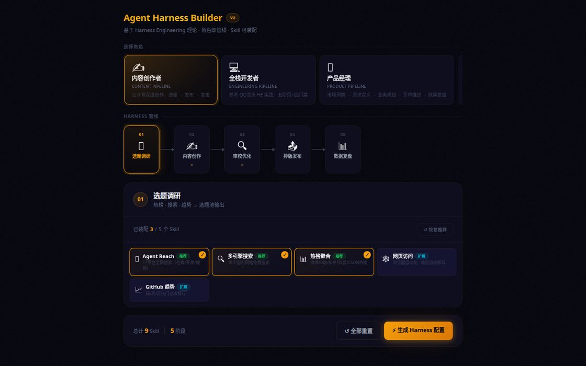
基于 QQ 音乐 Harness Engineering 理论构建的 Agent 装配台：6 个角色的 Harness 管线、每角色 5 阶段强制门禁、39 个 Skill 按阶段装配并生成完整配置。
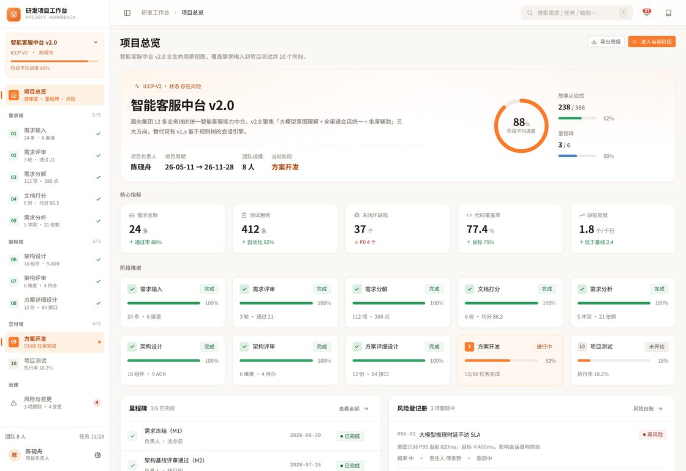
覆盖研发全生命周期的一体化工作台：10 个阶段、12 个页面、一条可追溯的跨阶段证据链。React 19 + TypeScript 6 + Vite 8，需构建后部署，本仓库仅保留源码。
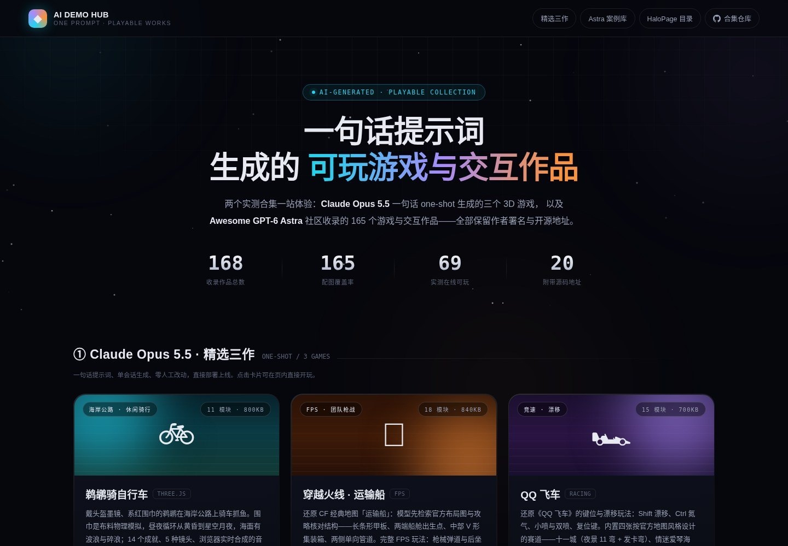
独立收录 175 个「一句话提示词 → 游戏 / 交互作品」：7 个精选入口（含《小王子》WebGPU、第三方开源同人复刻 INKWAVE、Claude Fable 5.1《Synesthesia》与 Claude Fable 5.2 的 76 个视觉实验合集），新增 Claude-Fable-5.2 类目精选 3 件单文件作品，Astra 案例库 165 项支持分类筛选与搜索，每项标注试玩地址与开源源码地址。
| 项目 | 技术形态 | 后端 | 体积 |
|---|---|---|---|
| 作业夹 | Vue 3 + Express + SQLite | 需要（Node 22） | 需构建 |
| 牛马鼓励器 | 单文件 HTML | 不需要 | ~32 KB |
| 夏日漂浮 | Three.js 单文件 | 不需要 | ~2.6 MB |
| Manus 架构拆解 | 单文件 HTML | 不需要 | ~68 KB |
| 錦鯉の池 · 双场景 | Canvas 2D + WebGL | 不需要 | ~840 KB |
| 赛点青 匹克球 | HTML + CSS + JS | 不需要 | ~60 KB |
| 今天吃什么 | 单文件 HTML | 不需要 | ~23 KB |
| 云舟 作品集 | HTML + 视频/字体资源 | 不需要 | ~1.5 MB |
| Agent 装配台 | 单文件 HTML | 不需要 | ~34 KB |
| 研发工作台 | React 19 + TS + Vite | 不需要 | 需构建 |
| AI Demo 门户 | 纯静态单页 + JS 数据 | 不需要 | ~11 MB |
README.md。
/path/to/site/static/xxx/，随后访问 https://你的域名/static/xxx/。1Panel / Nginx 同理，只需保证目录名与访问路径一致。